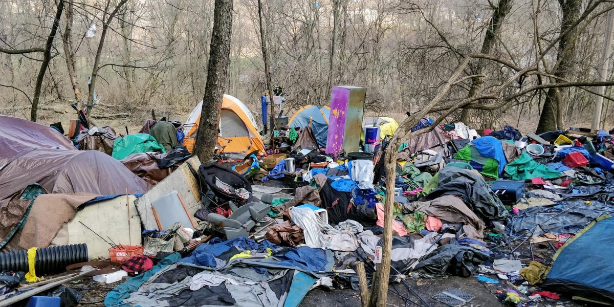

Mobile uploads
This is a picture of a camp I took 4 years ago.
I like to meditate on scenes like this.
I’m tired of just starting my thoughts with anger and hate. Doesn’t it exhaust you?
All the things I’m against: making abortions illegal, cops racially profiling Black people, locking up addicts, Israel exterminating Palestinians, America destabilizing the world and then being upset their refugees are knocking on our boarder.
I can feel my blood pressure rising just making this list.
Does this scene in this picture upset me? Of course it does. It makes me angry for all kinds of reasons. It makes my work so much harder to make the case that homeless people need their own space. It hurts all homeless people who just want to put up a shelter somewhere to get out of the wind and the rain.
But then I get mad at the rest of us. Why don’t we help these people? If you’re so upset by this why don’t you get some trash bags and shovels and get to work? You won’t do that of course, you’d rather just hate on these people.
It’s so easy for me to channel my own anger and hate. I am no saint. I do this work not because I’m better than you. I do this work because I’m just like you. I have as much anger and hate in my heart as you. Maybe more. I just take the energy of anger and hate and put it into doing something about it.
But I’m trying to let go of the anger and hate. I don’t want to be Darth Vader sheltering homeless people because I’m driven by rage against the machine. I want to be Yoda. Powerful in calm, accepting energy.
I just want to look at this picture as a matter of fact. It is what it is. There is no need for anger or sadness. It just is. When I get to that place then I can calmly, rationally contemplate what to do about it.
That’s where I’m spiritually trying to be more often. It’s just a more pleasant way to live.